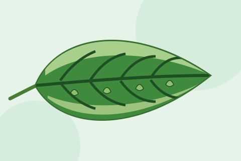

گلابی سنڈی
مڑے ہوئے بند پھول (گلاب نما پھول)، سبز ٹینڈوں میں چھوٹے سوراخ، اندر گلابی سنڈیاں اور داغدار روئی۔
تفصیل دیکھیں
Cotton Leaf Curl Disease
مڑے ہوئے پتے، موٹی اور گہری رگیں، اور پتوں کے نیچے چھوٹے پتے جیسے ابھار۔
کپاس کا پتہ مروڑ وائرس (CLCuD) ایک وائرس والی بیماری ہے جس نے پاکستان اور بھارت میں بہت بڑا نقصان کیا ہے۔ یہ وائرسوں کے ایک گروپ سے ہوتی ہے جنہیں سفید مکھی ایک پودے سے دوسرے پودے تک لے جاتی ہے۔
بیمار پودے کا کوئی علاج نہیں ہے۔ جو پودے شروع میں بیمار ہو جائیں وہ چھوٹے رہ جاتے ہیں اور بہت کم ٹینڈے بناتے ہیں۔ اس لیے بچاؤ اور سفید مکھی پر قابو ہی اصل طریقے ہیں۔

اصل وجہ: Begomovirus وائرسوں کا گروپ، جو سفید مکھی (Bemisia tabaci) سے پھیلتا ہے۔
ماہر کو کب بلائیں: جب چھوٹے پودوں پر پتہ مروڑ نظر آئے یا سفید مکھی اچانک بہت بڑھ جائے تو اپنے زراعت دفتر سے رابطہ کریں۔
جڑی بوٹی مار زہر کا نقصان
پتے مڑے ہوئے یا پیالے جیسے ہوتے ہیں مگر موٹی رگیں یا ابھار نہیں ہوتے، اور اکثر نقصان کھیت میں ایک خاص ترتیب میں نظر آتا ہے۔
رس چوسنے والے کیڑوں کا نقصان
سبز تیلے (جیسڈ) یا سست تیلے (ایفڈ) سے پتے پیالے کی طرح مڑ جاتے ہیں، مگر عام طور پر رگیں موٹی نہیں ہوتیں۔
یہ معلومات صرف عام رہنمائی کے لیے ہیں، تشخیص نہیں۔ ہم کبھی دوائی کی مقدار نہیں بتاتے۔ ہمیشہ اپنے مقامی زراعت افسر کے مشورے پر عمل کریں۔ حوالے انگریزی میں ہیں۔ آخری تبدیلی: اکتوبر 2026۔
مزید جانیں
مڑے ہوئے بند پھول (گلاب نما پھول)، سبز ٹینڈوں میں چھوٹے سوراخ، اندر گلابی سنڈیاں اور داغدار روئی۔
تفصیل دیکھیں
مکئی کے پتوں میں بے ڈھنگے سوراخ اور کاغذ جیسی کھڑکیاں، اور گوبھ میں گیلا برادے جیسا فضلہ۔
تفصیل دیکھیں
پیاز کے پتوں پر چاندی جیسی سفید لکیریں اور پتوں کی تہوں میں چھپے ننھے پیلے کیڑے۔
تفصیل دیکھیں